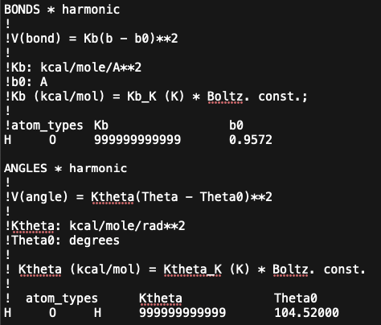

Simulation Parameters (pre-simulation)¶
NAMD and GOMC Configuration Files¶
These are slightly modified versions of the standard configuration files used for the NAMD and GOMC simulation engines. Some of the variable entries are modified in the configuration files, which allows the python code to search and replace these variables for the next simulation, so the simulation is started correctly from the previous one. Please refer to the GOMC Manual and the NAMD Users Guide for more information on the proper inputs for the simulation engines.
These files are located in the “NAMD_GOMC/required_data/config_files” directory, and these configurations files are auto-selected based on the user specified ensemble. The NAMD configuration file applies to all the possible ensembles. The provided GOMC configuration files are named and designed for each different ensemble (NPT, NVT, GCMC, or GEMC), which changes the inputs and move frequencies. An experienced user can modify these configuration files by changing or adding variables, time steps, move types, and move frequencies, as long as the variables work smoothly between NAMD and GOMC. These changes will likely not effect the hybrid python code if the inputs match between NAMD and GOMC and are hardcoded and not dependent on a variable value in the existing configuration files. However, the configuration files must maintain their names and locations in the “NAMD_GOMC/required_data/config_files” directory.
It is also possible to use various configuration files throughout a longer simulation by simply changing the configuration files and restarting the hybrid simulation with the different files in their proper location. For Example, in the grand canonical Monte Carlo (GCMC) ensemble, suppose the first NAMD simulation requires restraining a protein for the first cycle. In this case, the GCMC simulation can insert molecules into the binding pocket before allowing unrestricted movement of the protein. The simulation would then be restarted on the second cycle to the Nth cycle with a different NAMD configuration file without restraining the protein. However, the configuration files must maintain their names and locations.
NOTE: A simulation cycle is one (1) NAMD simulation and one (1) GOMC simulation.
NOTE: GOMC and NAMD both support the Shift, Switch, and Buckingham potentials, so they can be implemented in these hybrid simulations without issue.
NOTE: These hybrid simulation are currently only designed for orthogonal boxes.
NOTE: GOMC uses the standard Ewald Summation Method, while NAMD utilized the Particle Mesh Ewald (PME) to calculate long-range electrostatics.
An Example GCMC configuration file for the GOMC engine is provided below. The configuration file sections that should not be modified without a good understanding of the overall code are listed at DO NOT MODIFY in each section. The same DO NOT MODIFY statements are listing in the NAMD control file to alert the user.
######################## #Control file for GOMC_GCMC ######################## ############################################################################ # ========-------------------- INPUT --------------------------=========== ############################################################################ ######################### # enable, step (DO NOT MODIFY or the hybrid simulation and combine files may not work) ######################### Restart restart_true_or_false RestartCheckpoint Restart_Checkpoint_file #################################### # kind {RESTART, RANDOM, INTSEED} (DO NOT MODIFY or the hybrid simulation and combine files may not work) #################################### PRNG RANDOM #################################### # FORCE FIELD (DO NOT MODIFY or the hybrid simulation and combine files may not work) #################################### ParaTypeCHARMM true all_parameter_files #################################### # INPUT PDB FILES (DO NOT MODIFY or the hybrid simulation and combine files may not work) #################################### Coordinates 0 pdb_file_box_0_file Coordinates 1 pdb_file_box_1_file #################################### # INPUT PSF FILES (DO NOT MODIFY or the hybrid simulation and combine files may not work) #################################### Structure 0 psf_file_box_0_file Structure 1 psf_file_box_1_file #################################### # INPUT BINARY coodinatd, XSC, velocity files (DO NOT MODIFY or the hybrid simulation and combine files may not work) #################################### binCoordinates 0 coor_box_0_file extendedSystem 0 xsc_box_0_file binVelocities 0 vel_box_0_file binCoordinates 1 coor_box_1_file extendedSystem 1 xsc_box_1_file binVelocities 1 vel_box_1_file ############################################################################ # =======--------------------- SYSTEM --------------------------=========== ############################################################################ ################################## # Temp, and ChemPots or Fugacities (DO NOT MODIFY or the hybrid simulation and combine files may not work) ################################## mu_ChemPot_K_or_P_Fugacitiy_bar_all Temperature System_temp_set ############################# # SIMULATION CONDITION ############################# Potential SWITCH Rswitch 10.0 LRC false Rcut 12 RcutLow 1.0 Exclude 1-3 1-4scaling 1.0 ############################# # ELECTROSTATIC ############################# Ewald true ElectroStatic true CachedFourier false Tolerance 0.00001 ############################### # PRESSURE CALCULATION (DO NOT MODIFY or the hybrid simulation and combine files may not work) ################################ PressureCalc true GOMC_console_BLKavg_Hist_Steps ################################ # STEPS (DO NOT MODIFY or the hybrid simulation and combine files may not work) ################################ RunSteps GOMC_Run_Steps EqSteps GOMC_Equilb_Steps AdjSteps GOMC_Adj_Steps ################################ # MOVE FREQUENCY ################################ SwapFreq 1.00 DisFreq 0.00 RotFreq 0.00 RegrowthFreq 0.00 IntraSwapFreq 0.00 TargetedSwapFreq 0.00 ################################ # BOX DIMENSION #, X, Y, Z (DO NOT MODIFY or the hybrid simulation and combine files may not work) ################################ CellBasisVector1 0 x_dim_box_0 0.00 0.00 CellBasisVector2 0 0.00 y_dim_box_0 0.00 CellBasisVector3 0 0.00 0.00 z_dim_box_0 CellBasisVector1 1 x_dim_box_1 0.00 0.00 CellBasisVector2 1 0.00 y_dim_box_1 0.00 CellBasisVector3 1 0.00 0.00 z_dim_box_1 ############################## # CBMC TRIALS ############################## CBMC_First 16 CBMC_Nth 8 CBMC_Ang 50 CBMC_Dih 50 ############################################################################ # =======-------------------- OUTPUT (DO NOT MODIFY or the hybrid simulation and combine files may not work) --------------------------=========== ############################################################################ ########################## # statistics filename add (DO NOT MODIFY or the hybrid simulation and combine files may not work) ########################## OutputName Output_data ##################################### # enable, frequency (DO NOT MODIFY or the hybrid simulation and combine files may not work) ##################################### RestartFreq true GOMC_RST_Coor_CKpoint_Steps CheckpointFreq true GOMC_RST_Coor_CKpoint_Steps CoordinatesFreq false GOMC_RST_Coor_CKpoint_Steps ConsoleFreq true GOMC_console_BLKavg_Hist_Steps BlockAverageFreq true GOMC_console_BLKavg_Hist_Steps HistogramFreq true GOMC_console_BLKavg_Hist_Steps DCDFreq true GOMC_RST_Coor_CKpoint_Steps ################################ # OutHistSettings (DO NOT MODIFY or the hybrid simulation and combine files may not work) ################################ DistName dis HistName his RunNumber 1 RunLetter a SampleFreq GOMC_Hist_sample_Steps ################################## # enable: blk avg., fluct. (DO NOT MODIFY or the hybrid simulation and combine files may not work) ################################## OutEnergy true true OutPressure true true OutMolNum true true OutDensity true true OutVolume true true OutSurfaceTention false false
Required Files for the Hybrid Simulation¶
The hybrid simulation requires a PSF, PDB, and force field files (i.e., .inp or .par files) to run the simulation, which are required inputs. Typically, only a single PDB and PSF file are required per simulation box, unless you need a second PDB file to fix or restrain the atoms within NAMD, etc. A single or multiple force field files are required for both the NAMD and GOMC simulation engines, which is dependent on the system, and which force fields are being utilized.
NOTE: GOMC and NAMD force field files can be slightly different, so please refer to their respective manuals/documentation. However, unlike NAMD, GOMC handles fixed bonds and angles in its force field file by replacing bond and angle K-constants with “999999999999”. Please also see the image below for this section of the GOMC water force field with fixed bonds and angles.

NOTE: Additionally, the impropers and CMAP parameters need to be removed from the GOMC force field files, or GOMC will fail with an error when reading them.
MD/MC Hybrid Input¶
The MD/MC Hybrid input file is in the json format. An example fo the “user_input_NAMD_GOMC.json” file is provided below, and can be renamed by the user.
{"total_cycles_namd_gomc_sims": 10, "starting_at_cycle_namd_gomc_sims": 0, "gomc_use_CPU_or_GPU": "GPU" , "simulation_type": "GCMC", "only_use_box_0_for_namd_for_gemc": false, "no_core_box_0": 8, "no_core_box_1" : 0, "simulation_temp_k": 298, "simulation_pressure_bar": 1.01325, "GCMC_ChemPot_or_Fugacity": "ChemPot", "GCMC_ChemPot_or_Fugacity_dict": {"TIP3": -1000, "WAT": -2000}, "namd_minimize_mult_scalar": 1, "namd_run_steps": 500, "gomc_run_steps": 500, "set_dims_box_0_list": null, "set_dims_box_1_list": null, "set_angle_box_0_list": null, "set_angle_box_1_list": null, "starting_ff_file_list_gomc": ["required_data/equilb_box_298K/GOMC_TIPS3P_FF.inp"], "starting_ff_file_list_namd": ["required_data/equilb_box_298K/NAMD_TIPS3P_FF.inp"], "starting_pdb_box_0_file": "required_data/equilb_box_298K/TIPS3P_box_0.pdb", "starting_psf_box_0_file": "required_data/equilb_box_298K/TIPS3P_box_0.psf", "starting_pdb_box_1_file": "required_data/equilb_box_298K/TIPS3P_reservoir_box_1.pdb", "starting_psf_box_1_file": "required_data/equilb_box_298K/TIPS3P_reservoir_box_1.psf", "namd2_bin_directory": "required_data/bin/NAMD_CPU", "gomc_bin_directory": "required_data/bin"}
NOTE: The hybrid simulation always starts with NAMD and finishes with GOMC in a cycle. If set by the user, the first NAMD simulation will minimize the structure of the system.
NOTE: We assume that the best number of steps for each simulation engine per cycle is the values that, on average, provides two (2) uncorrelated samples for NAMD and two (2) accepted moves for each of the desired GOMC moves.
Variable definitions and usage for the “user_input_variables_NAMD_GOMC.json” file, or whatever the user names it are provided below:
- total_cycles_namd_gomc_simsinteger
The total number of simulation cycles, where a cycle is a NAMD and GOMC simulation. total_cycles_namd_gomc_sims = (NAMD_simulations + GOMC_simulations)/2
- starting_at_cycle_namd_gomc_simsinteger
The cycle number to start the simulations at. Enter zero for intial simualtion start, or non-zero for a restart. A new simulation would be started at zero (0). To restart a simulation, the last full cycle number of the simulation would be entered. The user may need to delete 1 or more of the last simulations if the simulation failed prematurely.
- gomc_use_CPU_or_GPUstring (only ‘CPU’ or ‘GPU’)
Run the GOMC simulation using the CPU or GPU. Note: For the NAMD simulation, the user will have to provide the path to the GPU or CPU NAMD version (i.e., This function does not set NAMD’s CPU or GPU version).
- simulation_typestring (only ‘GEMC’, ‘GCMC’, ‘NPT’, ‘NVT’)
The simulation type or ensemble to use Note: only GEMC-NVT available currently: ‘GEMC’ = GEMC-NVT
- only_use_box_0_for_namd_for_gemcbool (true or false)
This chooses if you want to run both simulation boxes in NAMD when running the GEMC ensemble, or just box 0. true = NAMD runs only box 0 for GEMC false = NAMD runs box 0 and 1 for GEMC
- no_core_box_0integer (> 0)
Number of CPU cores to use for box 0. This is the ONLY place to enter CPU cores for ‘GCMC’, ‘NPT’, ‘NVT’, and ‘GEMC’ and only_use_box_0_for_namd_for_gemc = True Note: The total simulation core = no_core_box_0 + no_core_box_1, when using the (GEMC’ and only_use_box_0_for_namd_for_gemc = False) values. Note: If using the ‘GCMC’, ‘NPT’, ‘NVT’, or (GEMC’ and only_use_box_0_for_namd_for_gemc = True) ensembles, the total simulation cores = no_core_box_0, regardless of the no_core_box_1 value.
- no_core_box_1integer (>= 0)
Number or CPU cores to use in box 1. This always ZERO for ‘GCMC’, ‘NPT’, ‘NVT’ (>= 0). Only use when ‘GEMC’ and only_use_box_0_for_namd_for_gemc = True (> 0) Note: The total simulation core = no_core_box_0 + no_core_box_1, when using the (GEMC’ and only_use_box_0_for_namd_for_gemc = False) values. Note: If using the ‘GCMC’, ‘NPT’, ‘NVT’, or (GEMC’ and only_use_box_0_for_namd_for_gemc = True) ensembles, the total simulation cores = no_core_box_0, regardless of the no_core_box_1 value.
- simulation_temp_kfloat or integer
GOMC and NAMD units of temperature are in Kelvin.
- simulation_pressure_barfloat or integer
GOMC and NAMD units of pressure are in bar (1.01325 bar = 1 atm).
- GCMC_ChemPot_or_FugacityNone or string (only stings are ‘ChemPot’ or ‘Fugacity’)
GCMC ensemble only: The variable used in the to control the GCMC ensemble. Choose either None, ‘ChemPot’ or ‘Fugacity’
- GCMC_ChemPot_or_Fugacity_dict = {str (residue name up to 4 characters): int or float (see below)}
GCMC ensemble only: The selected residue, which is a molecule, its chemical potential (ChemPot) or fugacity (Fugacity). GCMC_ChemPot_or_Fugacity_dict = {str (Residue name): int or float (ChemPots in unit GOMC K units or Fugacity in unit bar)} Example Chempot: GCMC_ChemPot_or_Fugacity_dict = {‘TIP3’: 1000, ‘Cl’ : -1000, ‘Na’ : -900} Example Fugacity (values >=0): GCMC_ChemPot_or_Fugacity_dict = {‘TIP3’: 1000, ‘Cl’ : 10, ‘Na’ : 0}
- namd_minimize_mult_scalarint (>=0)
The scalar multiple used to get the number of NAMD minimization steps for this intitial NAMD simulation. NAMD_minimize steps = namd_run_steps * namd_minimize_mult_scalar
- namd_run_stepsint (>=10)
The number of steps to run each cycle of the NAMD simulation. Needs to be 10 minimum for now, NEEDS TO BE THE SAME AS THE PREVIOUS SIMULATION, IF RESTARTED!
- gomc_run_stepsint (>=10)
The number of steps to run each cycle of the GOMC simulation. Needs to be 10 minimum for now, NEEDS TO BE THE SAME AS THE PREVIOUS SIMULATION, IF RESTARTED!
- set_dims_box_0_listlist or null, [null or float or int (>0), null or float or int (>0), null or float or int (>0)]
The x, y, and z-dimensions of length for box 0 in Angstrom units. This is a list of 3, which can contain a null, float or int (>0). The length is auto read from the PDB files CRYST1 line, if it is containted there. This command overrides the PDB value(s), and is needed for the simulation if the data is not in the pdb file. Note: if null is used instead of a list the PDB values will be used. Note: if null is used instead of the x, y, or z-dimension, the PDB file will be used for the null dimensions. Example: [10, null, null], the x dimension would use 10 and the y and z dimensions would be the PDB file values.
- set_dims_box_1_listlist or null, [null or float or int (>0), null or float or int (>0), null or float or int (>0)]
The x, y, and z-dimensions of length for box 1 in Angstrom units. This is a list of 3, which can contain a null, float or int (>0). The length is auto read from the PDB files CRYST1 line, if it is containted there. This command overrides the PDB value(s), and is needed for the simulation if the data is not in the pdb file. Note: if null is used instead of a list the PDB values will be used. Note: if null is used instead of the x, y, or z-dimension, the PDB file will be used for the null dimensions. Example: [10, null, null], the x dimension would use 10 and the y and z dimensions would be the PDB file values.
- set_angle_box_0_listlist or null, [null or float or int, null or float or int, null or float or int]
The alpha, beta, and gamma angles for box 0 in degrees. This is a list of 3, which can contain a null, float or int. The angles are auto read from the PDB files CRYST1 line, if it is containted there. This command overrides the PDB value(s), and is needed for the simulation if the data is not in the pdb file. Note: if null is used instead of a list the PDB values will be used. Note: if null is used instead of the alpha, beta, and gamma angles, the PDB file will be used for the null dimensions. Example: [10, null, null], the alpha angle would use 10 and the beta and gamma angles would be the PDB file values. NOTE: CURRENTLY ONLY ORTHOGONAL BOXES ARE AVAILABLE, SO ONLY NULL OR 90 WILL BE ACCEPTED. NULL WILL AUTO DEFAUT TO 90.
- set_angle_box_1_listlist or null, [null or float or int, null or float or int, null or float or int]
The alpha, beta, and gamma angles for box 1 in degrees. This is a list of 3, which can contain a null, float or int. The angles are auto read from the PDB files CRYST1 line, if it is containted there. This command overrides the PDB value(s), and is needed for the simulation if the data is not in the pdb file. Note: if null is used instead of a list the PDB values will be used. Note: if null is used instead of the alpha, beta, and gamma angles, the PDB file will be used for the null dimensions. Example: [10, null, null], the alpha angle would use 10 and the beta and gamma angles would be the PDB file values. NOTE: CURRENTLY ONLY ORTHOGONAL BOXES ARE AVAILABLE, SO ONLY NULL OR 90 WILL BE ACCEPTED. NULL WILL AUTO DEFAUT TO 90.
- starting_ff_file_list_gomclist of strings
All the force fields for the GOMC simulation. The strings in the list must be the relative path and file name to the force field(s) Example : [“required_data/equilb_box_298K/GOMC_TIPS3P_FF.inp”, “required_data/equilb_box_298K/GOMC_NaCl_FF.inp”]
- starting_ff_file_list_namdlist of strings
All the force fields for the NAMD simulation. The strings in the list must be the relative path and file name to the force field(s) Example : [“required_data/equilb_box_298K/NAMD_TIPS3P_FF.inp”, “required_data/equilb_box_298K/NAMD_NaCl_FF.inp”]
- starting_pdb_box_0_filestring
The relative path and filename to the starting PDB file for box 0, which is initally fed to the NAMD simulation since it starts first. The string in the list must be the relative path to the force fields and the file name Example : “required_data/equilb_box_298K/TIPS3P_box_0.pdb”
- starting_psf_box_0_filestring
The relative path and filename to the starting PSF file box 0, which is initally fed to the NAMD simulation since it starts first. The string in the list must be the relative path to the force fields and the file name Example : “required_data/equilb_box_298K/TIPS3P_box_0.psf
- starting_pdb_box_1_filestring
The relative path and filename to the starting PDB file for box 1, which is initally fed to the NAMD simulation since it starts first. The string in the list must be the relative path to the force fields and the file name Note: this is only needed for the “GCMC” and “GEMC” ensembles/simulation types Example : “required_data/equilb_box_298K/TIPS3P_box_1.pdb”
- starting_psf_box_1_filestring
The relative path and filename to the starting PSF file box 1, which is initally fed to the NAMD simulation since it starts first. The string in the list must be the relative path to the force fields and the file name Note: this is only needed for the “GCMC” and “GEMC” ensembles/simulation types Example : “required_data/equilb_box_298K/TIPS3P_box_1.psf
- namd_bin_filestring
The relative path to the directory where the namd2 file binary is located. This should be in the required_data/bin/NAMD212, or required_data/bin/NAMD212 or required_data/bin directory. IMPORTANT MANUAL MODIFICATION: To use the GPU and CPU or either version of namd, the copied files in this directory must be renamed namd2_CPU and namd2_GPU. NOTE: THIS WAS ONLY TESTED ON NAMD VERSION 2.14, SO IT MAY NOT WORK ON OTHER NAMD VERSIONS WITHOUT SOME CODE MODIFICATION. Alternatively, a sybolic link to namd2 file binary could be there. Example: “required_data/bin/NAMD212”
- gomc_bin_filestring
The relative path to the directory where the GOMC file binaries are located. This should be in the required_data/bin directory. Alternatively, a sybolic link to GOMC file binaries file binary could be there. NOTE: THIS WAS ONLY TESTED ON THE GOMC DEVELOPMENT AFTER VERSION 2.70, SO IT MAY NOT WORK ON OTHER GOMC VERSIONS WITHOUT SOME CODE MODIFICATION, AND SOME ADDITIONAL FUNCTIONALLITY IS NOT IN PREVIOUS GOMC VERSIONS. Example: “required_data/bin”